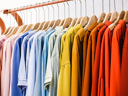

My portfolio spans various domains, showcasing expertise in supervised learning, recommender systems, unsupervised learning, data visualizations, API development, web app development and deployment, data engineering and automation. Continuously expanding, my projects demonstrate a blend of skills and innovation.

The EuRecog gesture recognition app is a hand gesture recognition system that lets a user customize ten unique hand gesture signs with questions, then based on the gesture provided by said user in usage sends the question attached to that gesture to an LLM (Open AI's gpt-3.5-turbo-instruct) then provides an answer in both text and audio form.

The Style Me Recommendation System recommends clothing to individuals based on items present in their virtual wardrobe. Recommendations span dresses, shirts, skirts, shoes and bags depending on items present in individual's uploaded pictures present in their virtual wardrobe.

This is a machine learning web application that predicts developers salaries based on their personal and employment information and tech stack. Model was packaged into a flask app with a frontend built using HTML/CSS and booststrap, containerized using docker and deployed on AWS Elastic beanstalk
This is a hybrid recommender system that combines the paradigms of content based filtering(using gradient boosting regressor) and collaborative filtering to recommend destination spots for users/tourists based on their demography and spots liked by tourists with similar demography and likes.

This is a customer segmentation analysis created by first running a k means clustering algorithm on unlabeled data and after which creating an interactive powerBI dashboard of analyzed data based on distinct customer segments.

This is a machine learning model that predicts the churn of customers in a power utilities company.